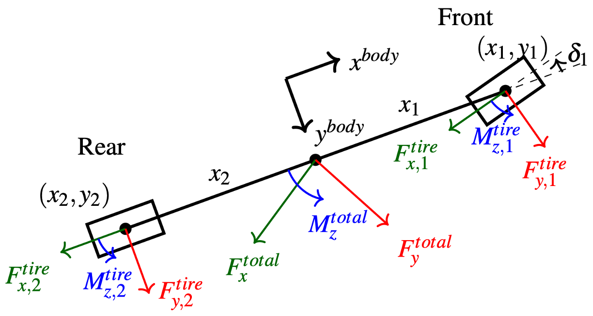

Vehicle Integration
We apply the tire brush model to an MMV with any number of tires, given their positions relative to the center of gravity:
- Transform velocity from body frame into tire frame
- Compute tire brush model forces and moments
- Transform forces and moments back into body frame
- Add up forces and moments to calculate acceleration
